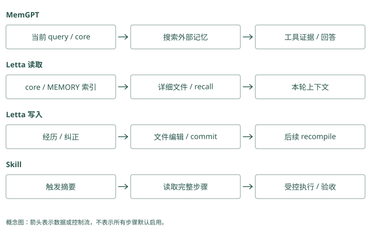

Agent 原生记忆与技能
如果应用没猜中要找哪段历史
此前由程序在调用模型前搜索。现在用户问：“上次那个方案后来为什么没采用？”程序可能不知道“那个方案”指什么，固定关键词检索未必能解决。
另一种办法是给 Agent 搜索旧对话的工具。模型先从当前消息判断缺少什么，发出工具调用，工具把旧内容带回，模型读完再继续。MemGPT 论文研究的主动上下文管理可以从这条控制流程理解，不需要假设模型有无限输入窗口。
用户：上次 Atlas 那个方案为什么取消？
Agent：需要找出之前讨论的方案。
工具：返回相关历史和来源。
Agent：读到取消原因，回答；证据不足则继续查。这里多了一种失败：历史保存完好，搜索工具也有效，但模型没有调用。测试完整 Agent 时要观察这个选择，不能只单测 search 接口。
模型可以提出“查询 Atlas 的旧教训”，但真正调用搜索的是应用的工具执行器。应用可把 Mem0 search 或 Graphiti 查询包装成工具，收到请求后校验可见范围，查库，再将文字作为工具结果回传。主动记忆是这条选择与执行循环的行为，并不是数据库自己发现模型需要哪段历史。
Mem0：把 search 包成工具，主动选择发生在宿主
应用可以提供“搜索 Atlas 历史”工具，内部用可信身份调用 search()，模型从工具结果继续判断。SDK 没有替宿主实现整套模型循环。工具 schema 应只允许模型表达查询意图，不能让它自由指定别人的 user_id；是否继续搜索也需纳入端到端评测。
Graphiti：图查询可以成为补证据工具
宿主将 search() 或固定 search_() 配方暴露给模型，返回 fact、时间和来源。模型读到“Atlas 属平台组”后可以继续查批准人，或由代码限深展开关系。图存在不会自动触发这些动作，第一次工具未被调用时应查宿主控制流。
小核心常驻，大资料按需打开
把所有细节常驻，会让每轮都付出相同的长输入费用。我们可以让核心只写：
Atlas 项目资料见 projects/MEMORY.md。
正式发布需核对迁移检查，演练规则另见项目笔记。详细失败日志放子目录或历史检索里。Letta Code 的 MemFS 是为 Agent 提供这种记忆文件视图的机制。根 Markdown 用于核心上下文和索引，子目录承载按需读取的详细内容。
索引链接只告诉模型文件在哪，不会自动加载链接后的全文。模型需要先打开项目索引，再读具体文件。这个做法像先看书的目录再翻页；目录写错或没有打开页面，内容就不会进入当前输入。
每轮常驻“默认中文、生产发布先审批”，详细失败日志只在需要时查。Mem0 可以提供短记录与详细来源入口，Graphiti 可以提供对象摘要与材料编号；应用决定哪段每轮发、哪段按需取。常驻太多会挤占输入，常驻太少又可能让模型不知道该查什么。
Mem0：稳定摘要与详细事实可以由应用分层
审核过的核心约束可以由业务按身份直接读取并常驻，详细事件通过 query 搜索。Mem0 没有 Letta 的 root、deferred 目录编译协议；所谓分层在这里是读取策略。避免同一规则既常驻又从事实池全文返回，assembler 需按 ID 或来源去重。
Graphiti：summary 可作入口，episode 可作详情
节点 summary 或社区摘要帮助发现有关 Atlas 的区域，事实边给具体关系，episode 给原文。它们形成不同粒度的访问方式，但 summary 不一定始终注入。应用需要决定哪些节点是入口、何时展开，以及有时间变化时先核对哪条事实边。
写了文件，为什么这次还没有生效
假设用户纠正发布规则，Agent 修改了 projects/atlas.md。这次模型调用的系统输入已经组装好了，修改磁盘文件不会自动回头改写已经发送的输入。
Letta Code 用 Git 记录 MemFS 的版本。通过 memory 工具做小修改会自动提交，直接文件编辑需要提交；后续上下文编译才会把适用的已提交版本反映到未来输入。编译在这里就是把核心文件整理成模型提示，不是编译机器代码。
因此，排查时分开看三个状态：文件有没有改、版本有没有提交、后续输入有没有使用新版本。当前调用若需要立刻知道纠正，应通过当前消息或工具结果提供，不能只等待未来核心更新。
一次回答已发送旧默认环境，此时后台改了记录，模型不会在计算中自动再读数据库。Mem0 update 改的是后续读取内容；Graphiti 新材料处理完，应用也要重新查询并组装才可能看到。记录更新、缓存更新与本轮消息更新是不同步骤，不能用一次存储成功代替全部生效。
Mem0：update 改存储，不改已发送的 prompt
update() 重新 embedding、更新 payload 和历史。若模型调用已经发出，SDK 无法回头替换那次输入；后续 search 才有机会读新正文，还需清理应用缓存。当前任务要立即用纠正，应把新消息或工具结果放进当前交互，不只依赖下一轮读取。
Graphiti：新 episode 处理结束后仍有读取边界
写入可能更新旧边时间与节点摘要，但已经打包的输入不会自动刷新。后台任务完成、后端索引可见与宿主重新查询是不同状态。记录 episode 处理完成后进行受限验证，再更新下一次输入，不能把接收 HTTP 成功当作新规则已经生效。
从一条教训到一个 Skill
“Atlas 发布前检查迁移”是一条记忆。一个发布 Skill 还需解释怎样检查、什么结果允许继续、失败怎样停止、发布后怎样验收。
下面是教学流程，不是可以直接执行的生产命令：
触发：Atlas 正式发布。
输入：目标版本、环境、批准信息。
步骤：确认环境 → 检查迁移 → 人工确认 → 执行发布。
失败：检查不通过时停止，不自动绕过。
验收：健康检查通过，并记录发布版本。先通过简短说明选择这个 Skill，再读完整步骤，这叫渐进加载。Letta 用独立技能内容，TencentDB 还给技能资源做版本和访问管理，MemOS 插件可以从轨迹整理技能候选。它们共享“少量入口、按需详情”的想法，但提交、发布和生效协议不同。
Hermes 可以帮助选择候选 Skill，Beacon 可以提供当时的动作证据，Basic Memory 可以保存人审过程笔记。选中、保存、评审、授权执行分别由不同环节完成。
Skill 在这里指可复用的执行资产，需要入口、参数、工具、完成判断及权限。Mem0 生成“检查、审批、发布”的过程文字，还缺这些执行合同；Graphiti 能表达步骤关联，也没有因此得到可运行函数。可以将文字作为编写 Skill 的材料，审核代码和测试后再启用。
Mem0：procedural_memory 生成的是步骤文本
_create_procedural_memory() 用过程总结提示请求模型，从对话得到一段可复用文字，然后存入事实后端。没有自动打包资源文件、版本发布和权限审查。想成为 Skill，还需宿主定义触发、输入、工具、失败条件和验收，并对文本逐条回放。
Graphiti：可以表达步骤关系，不内置执行引擎
通过流程、步骤和依赖关系建模，可以查询检查在发布之前。但图上的先后关系不负责调度工具，也不验证步骤在当前环境可运行。应用取得流程证据后，应加载完整已审核版本，再由确定性策略检查批准与停止条件。
回滚为什么不能代替测试
Git 可以恢复旧文本，TencentDB 的版本管理可以保存新旧资源。但一个新版本即使格式正确，也可能把“正式发布前检查”泛化成“所有任务都运行发布命令”。我们应拿正式发布、演练和无关项目三个场景回放，观察触发边界是否正确。
修改核心规则改变的是未来输入，不是训练模型权重。它会影响未来行为，也能把一次误解放大，所以适用条件和证据应写清楚。工具权限仍由程序控制，不能因为 Skill 文件写了“有管理员权限”就授予它。
改错卡片后，Mem0 的 history 可以帮助找到旧正文，应用还需决定怎样恢复当前值。Graphiti 删掉刚添加的材料，不保证所有被改过的关系和摘要都恢复原样。回滚描述的是恢复动作，测试描述的是新状态是否满足要求；能够回滚不能证明之前的修改安全。
Mem0：history 提供修改证据，恢复需要再写入
历史中保存旧正文，可以由应用挑选已知版本再显式 update。恢复文本时仍会重新生成向量与实体链接；它没有自动恢复所有外部 Skill 资源和 prompt 缓存。恢复后跑同一组正式发布、演练和其他项目测试，才能确认行为边界回来了。
Graphiti：删除新 episode 不等于整体回滚
remove_episode() 处理该来源相关对象，未承诺恢复它造成的旧边失效和所有摘要变化。完整回滚可能需要备份、事件重放或重新构建派生视图。图结构可追溯让重建更可行，但不能把一个删除 API 当作反向撤销整个 ingestion。
一个好索引，要让 Agent 知道何时值得打开
假设根索引只写“项目资料”，链接到一个目录。模型遇到发布任务时，不一定知道这里有迁移检查规则。更有帮助的入口说明内容与用途，比如“Atlas 发布和回滚约束，正式发布前阅读”。它既告诉模型资料在哪，也告诉模型何时需要这份资料。
入口不宜变成第二份全文。如果把所有步骤都复制到根索引，详细文件再保留一份，很快会出现一处已更新、另一处仍旧的情况。核心可以保留稳定约束和明确路径，细节由对应文件承担。读取失败时，模型应知道它缺少步骤，不能把索引里一行摘要当作已经读完完整流程。
主动读取通常需要多次调用。第一次模型发现信息缺口，工具返回索引；第二次决定打开发布笔记；第三次可能追查原始失败。它省下每轮常驻长文本的成本，却增加本次工具往返和选择错误的机会。任务特别固定时，应用直接加载必要约束可能更可靠；任务变化很大时，主动发现的灵活性才更值得。
索引条目可以写“Atlas 发布：含迁移检查与正式批准要求”，正文另放详细来源。Mem0 返回相应卡片编号，Graphiti 返回可作为入口的对象编号，模型才知道何时值得继续读取。索引说明只负责发现，应用执行读取时还要核验当前权限与版本，不能凭一段旧简介直接行动。
Mem0：发现说明可以和读取正文分离
业务可保存短入口“正式发布读取 Atlas 检查规则”，工具根据稳定 ID 获取审核全文。get() 的准确读取避免相似度随机决定已知规则是否出现；但要先核验 ID 所属身份。搜索用于发现，直接读取用于已知目标，组合起来比单一 top-k 更容易解释。
Graphiti：规范节点 UUID 可以固定探索入口
已确认 Atlas 节点后，center_node_uuid 支持按接近该节点的关系重排；高级搜索还可提供 BFS 起点。入口 UUID 应来自可信范围，不能由模型随便引用其他组节点。距离近帮助定位资料，但某条近边是否适用发布仍由事实语义和时间判断。
修改未来规则之前，先比较旧版和新版
用户说“上次不要直接跑生产命令”，Agent 可能拟出“禁止部署”作为新核心规则。对比原话和候选就能发现，候选没有保留项目、环境和批准条件。更合适的改法是在对应项目里写明正式发布需要确认，而不是让所有未来任务都不能部署。
在提交前，可以把新旧文本带入同一组任务回放。正式发布应请求批准，预发布演练应按演练范围执行，其他项目不应受到 Atlas 规则影响。这类测试验证的是策略边界。Frontmatter 校验通过只能说明文件格式符合编译要求，Git 提交成功只能说明版本已保存，两者都没有证明行为正确。
还要防止反思形成自我引用。假设模型先猜测根因，再把自己的回答写入记忆，下一次引用这条记忆就像得到了第二份证据。实际上，两次陈述都来自同一个未验证猜测。记忆文件应连回用户原话或工具观察，明确哪些是模型建议，哪些已有验证。这样反思才不会把反复改写当成反复确认。
助手第一次猜迁移是根因，第二次总结又重复它，看起来有两份记录，其实只有一个未证实猜测。Mem0 可能保存两张卡，Graphiti 可能形成两个来源材料对象；这不自动变成两份独立证据。应用保留原始来源关系，比较新版规则时应数真实观察，不数总结次数。
Mem0：模型自述不能当作第二份来源
自动提取 Agent 反馈时，可能保存模型自己总结的原因。payload 的 role、actor 或 attributed_to 帮助区分说话者，但不构成验证。应用对高风险候选要求工具或用户来源，再通过回放批准 update，防止上一轮猜测变成下一轮确定规则。
Graphiti：多个 episode 可以重复同一未经验证的说法
模型回答和用户引用该回答可能进入不同 episode，关系来源数量增加却没有新增观察。保留 source_description 与事件映射，识别来源依赖；审核未来规则时查看实际支持链。自动 summary 合法地整合内容，也可能把转述压成确定陈述，需要对照原始材料。
动手检查
项目笔记写了正确规则，但根索引没有链接它；另一个规则已改但未提交。给这两种情况分别写排查步骤。
答案提示：前者查发现路径和实际读文件动作；后者查提交与后续编译。不要把两种问题都归为模型忘记。旧 Letta 仓用于历史学习，当前文件协议需查 Letta Code。
实现笔记与源码对照（选读）
MemGPT：有限窗口如何主动换入历史
MemGPT 论文把上下文窗口类比为主存，把外部记忆类比为磁盘。模型只能用当前窗口推理，因此需要一种明确的动作，把外部内容带进窗口，或把值得保留的状态写出去。它改变的是上下文管理协议，不是把模型窗口变成无限，也不是在线更新模型权重。
核心记忆保存始终可见的 persona、用户信息等短内容；recall memory 面向过去对话；archival memory 保存可检索的长期资料。读写工具使模型能够主动管理这些层：发现问题需要旧信息时搜索，读取结果后再继续回答；发现长期偏好时更新核心或档案。
用户 query + 核心记忆 + 最近消息
→ 模型发现缺少旧证据
→ 调用 recall/archival 检索工具
→ 工具结果进入当前窗口
→ 回答或继续检索上下文接近容量时，harness 的管理机制促使内容压缩或移出窗口；后续仍可通过检索取回历史。论文中的虚拟上下文思想是“有限工作区 + 外部存储 + 工具控制流”，不能只复制一个 vector store 就声称实现了 MemGPT。
代价是模型必须知道何时搜索、搜什么、如何解释结果。若没有意识到缺失上下文，存储完好的历史仍不会被用到。评测要同时记录工具调用率、错过检索的情况和最终答案，而不只测试单独搜索 API。
Letta 旧仓与当前 Letta Code
本地 letta-ai/letta 的 README 指向当前 letta-ai/letta-code，旧 V1 API server 在 archive 分支。旧仓保留历史与迁移证据，不能把它的提交频率当作当前项目维护情况，也不能把历史 API 教程不加区别地用于当前 harness。
Letta Code 是有持久身份与经验的 Agent runtime，包含 CLI、App Server、channels 等入口。它继承 Agent 自管理上下文的思想，但当前 memory filesystem、Git 与 prompt 编译规则应以新仓实现为准。
Letta Code：MemFS 文件如何变成上下文
当前 prompt 源码目录 中的 letta_root_memfs.md 区分自动存储的 message history 与 Agent 可编辑的 memory files。Recall history 由 harness 保存，Agent 用 recall subagent 搜索；它与可重写的 core memory 不同，不能为了“学习”篡改原始经历。
Core、索引与 deferred memory
根目录 Markdown 参与核心上下文。根 MEMORY.md 是不带 frontmatter 的概览与索引，其他根 Markdown 使用恰好 name、description 两个 frontmatter 字段。带自身 MEMORY.md 的子目录承载按需读取的详细记忆，Agent 应先读该索引，再打开深层文件，Skill 则保持独立结构。
MemFS root
├─ MEMORY.md：简短概览与相对 Markdown 链接
├─ persona.md：核心行为/身份
├─ user.md：稳定用户偏好
├─ projects/MEMORY.md：项目入口
│ └─ atlas.md：项目细节，按需读
└─ skills/：过程知识，按触发加载当前 prompt 使用普通相对 Markdown 链接作为发现路径，不能把旧版本的 [[path]] 约定写成现行要求。索引告诉 Agent “哪里有信息”，不是把所有链接内容自动展开。根文件应保留稳定约束和索引，长日志放子目录或 recall。
写了文件，什么时候生效
MemFS 是 Git-backed projection。memory tool 进行小修改时会自动提交；直接文件修改需要提交到 MemFS repo。Pre-commit 校验 frontmatter，并保护只读文件。记忆编辑不会立即重写本轮已经编译的 system prompt，新 conversation、显式 recompile 或相关 committed revision 触发的后续编译才反映变化。
经历/反馈 → 候选规则 → 修改记忆文件
→ Git commit
→ 后续 prompt recompile
→ 未来调用使用新 core这使修改可 diff、回滚和同步，也意味着“文件已写”与“未来模型已看到”是两个状态。排查遗忘时要检查是否提交、索引是否可发现、是否重新编译，以及规则是否放进了正确的层。
system prompt learning 如何起作用
用户纠正“Atlas 发布不要直接跑生产命令”，Agent 可以把已核验的仓库约束写入 core 或项目索引。未来调用带上该规则，从而改变动作选择。这是 token-space learning：改的是输入上下文，没有训练基础模型。
若把一次抱怨概括成“永远不运行任何部署命令”，就产生过度泛化。Git 能恢复文本，不能自动证明策略正确。新的 procedural/core 规则应保留适用项目、来源、触发边界和验证方法；安全与工具权限仍由 runtime 确定性执行。
如何读取一次旧经历
问“Atlas 上次为什么发布失败”，core 可能只保留 Atlas 的索引。Agent 先读项目笔记，若摘要不足，再搜索 recall，取回原始对话与工具证据，回答后决定是否需要更新长期教训。这个路径减少始终驻留的 token，却依赖 Agent 的主动发现与检索行为。
/doctor 等检查帮助发现过大的核心 prompt；共享 memory repo 可附加给多个 Agent，但有独立来源与读写权限。Git history 也可能同步到远端，因此不能把秘密写入 memory，且用户删除必须覆盖历史与备份政策。
记忆与 Skill 的区别
记忆回答过去发生什么、当前已知什么；Skill 描述一类任务的操作过程。一个 Skill 应包含触发条件、输入、步骤、工具、失败处理与验证。成功一次的命令序列只能是候选经验，不能直接成为通用流程。
轨迹与结果 → 聚类同类任务 → 提取稳定步骤和边界
→ 候选 Skill → 回放评测/人工审核 → 版本发布Letta Code 用独立 skills 承载过程知识；TencentDB 为 Skill 提供版本、资产权限与路由；MemOS 插件从轨迹/策略中组织 Skill。三者都需要区分“路由摘要”和“执行全文”：先根据摘要选择，再读完整步骤，不能仅凭检索的一小段就执行高风险操作。
Coding Agent 特有的记忆
仓库约束、失败根因、handoff、符号关系与发布步骤往往比用户画像更重要。Agent Beacon 保留完整动作证据，Hippo 维护教训寿命与 outcome，Basic Memory 让人审核和编辑笔记，TencentDB 将代码/文档知识纳入资产范围。它们可补充 Agent 自管理状态，但只有一个最终 context assembler 应负责注入，避免多个 hook 用各自摘要反复覆盖事实。
同样的渐进加载，各项目如何实现
Letta 的 core/index 每次编译出现，Agent 沿索引打开 deferred 或 recall；TencentDB Proxy 注入高层摘要、暴露低层与知识工具；Basic 已知 URI 时直接取笔记，depth 控制关系展开。三者先给小入口，后取详情，入口遗漏都可能导致正确证据没有被打开。但 Letta 改 core 后会改变未来 prompt，Basic 重建索引只改变搜索视图，TencentDB 撤销 Loadout 会改变可见资产集合。
Cognee recall 的 Skill route 返回过程知识，MemOS 插件/skill reader 组织经验或技能内容，Hippo 的本地经验与 skills 模块可提供流程候选。它们可以帮助宿主选择技能，却不因此都拥有 Letta 那种 self-edit/commit/recompile 协议。Hermes skillpick 等判别入口选择候选 Skill，也不负责发布或授权执行。
Skill 版本化为什么不等于评审
TencentDB 的 skill-versioning.ts 把 owner/version/hash 校验、资源目录复制/变更、DB appendVersion 与失败清理组织成版本操作。跨资源存储与 metadata 没有一个全局 SQL 事务，要靠顺序、补偿与部分自愈。发布后还需要让路由摘要、正文和资源指向同一版本，旧缓存不能继续执行旧步骤。
Letta 用 Git 保存 Agent-owned Skill 与 memory 的变化，回滚可恢复文本，却不自动跑流程回放。MemOS 的“结晶化”表示从轨迹提炼过程知识，也仍需验证。Basic 里的程序笔记和 Hippo 的教训都能成为 Skill 输入，但目录/标签不是审核凭证；Beacon 提供证据不代表会批准步骤。模型、工具权限与人审仍需独立于这些版本机制。

项目对照速查（选读）
本章对照结论
| 项目 | 渐进加载/过程知识接法 | 更新何时影响 Agent | 需要分开的边界 |
|---|---|---|---|
| MemGPT / 旧 Letta | 论文 core/recall/archival 工具 | 工具返回补当前窗口 | 历史协议非当前文件约定 |
| Letta Code | root core、索引、deferred、recall、skills | 已提交版本在后续编译 | 文件保存/commit/生效三状态 |
| TencentDB | Loadout、Skill 摘要、工具详情、L2/L3 | 资产/版本与 Proxy 注入路径 | owner/ACL、缓存、资源事务 |
| MemOS | 插件轨迹/策略/Skill 与 reader | scheduler/backend/宿主加载后 | 语义提升非 KV/LoRA 分层 |
| Cognee | typed entries 与 Skill recall route | 管线写入完成、召回使用 | 检索到步骤非获得工具权限 |
| Hippo | 本地教训/过程记忆与可选技能入口 | recall/sleep/技能加载 | outcome 增寿非批准执行 |
| Basic Memory | URI、关系笔记与人审流程 | 文件同步索引后，主动读取 | relation 不是可执行授权 |
| Hermes Jev Skills | 判别选 Skill、检查证据 | 本次选择生效 | 不发布、不存长期流程本体 |
| Agent Beacon | 有顺序的工具轨迹供下游 | 提炼/评审后才影响行为 | 捕获、提炼、批准三阶段 |
| 其余事实/图框架 | 可存约束与步骤，再由宿主加载 | 宿主决定注入和执行 | 不据此宣称原生 self-edit harness |